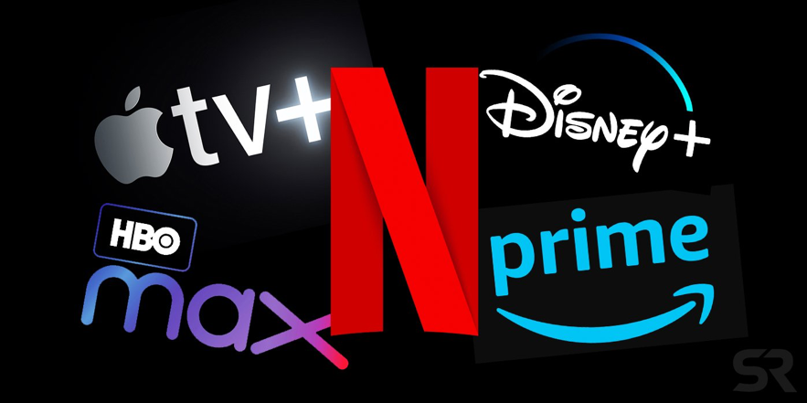

Las plataformas de música en streaming son servicios digitales en línea que ofrecen a los usuarios acceso instantáneo e ilimitado a vastos catálogos musicales, audiolibros y podcasts. Funcionan bajo el modelo de música bajo demanda, lo que significa que el usuario puede elegir exactamente qué canción, álbum o lista de reproducción desea escuchar en el momento que lo desee. La clave de su funcionamiento es la tecnología de streaming: el contenido se transmite constantemente por Internet en pequeños paquetes de datos, permitiendo la reproducción inmediata sin la necesidad de descargar el archivo completo y almacenarlo permanentemente en el dispositivo.
El Catálogo y el Modelo de Negocio
Estas plataformas han transformado el consumo musical al reemplazar la necesidad de comprar canciones individuales o álbumes completos. Operan bajo dos modelos principales:
Suscripción Premium: El usuario paga una tarifa mensual para obtener una experiencia sin anuncios, acceso a la máxima calidad de audio disponible y la funcionalidad de escucha sin conexión (descargar temporalmente el audio en la aplicación).
Modelo Gratuito (Freemium): El servicio es gratuito, pero está financiado por la inclusión de anuncios publicitarios y suele tener limitaciones en la funcionalidad, como la reproducción aleatoria obligatoria o una calidad de audio inferior.
El catálogo se construye a través de acuerdos de licencia con sellos discográficos, artistas y distribuidores, asegurando que el contenido se distribuya legalmente y que los artistas reciban regalías por cada reproducción. Ejemplos líderes son Spotify, Apple Music, YouTube Music y Deezer.
Experiencia del Usuario y Tecnología
La experiencia que ofrecen estas plataformas va más allá de solo reproducir música. Utilizan complejos algoritmos de recomendación que analizan los hábitos de escucha del usuario (géneros, artistas, historial) para generar listas de reproducción personalizadas y descubrir nueva música con una precisión sorprendente (como "Descubrimiento Semanal" en Spotify). Además, suelen ser compatibles con una amplia gama de dispositivos, desde teléfonos inteligentes y tabletas hasta computadoras, altavoces inteligentes y sistemas de audio para automóviles. La calidad del audio, que se basa en formatos con pérdida como AAC o a veces sin pérdida como FLAC (en planes premium especiales), se ajusta automáticamente a la velocidad de la conexión a Internet del usuario para garantizar una reproducción ininterrumpida.
